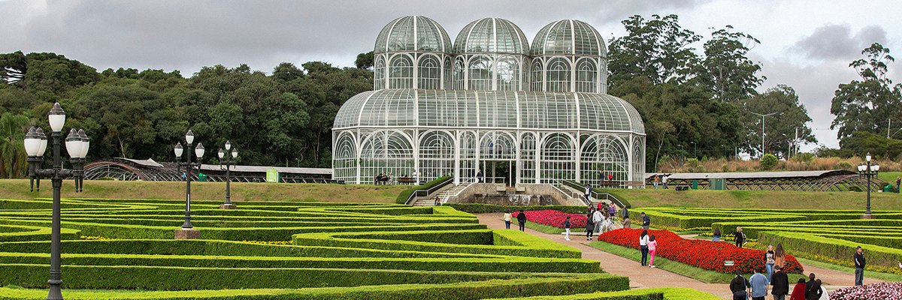

Jardim Botânico de Curitiba
Vista aérea do Rio de Janeiro
Vista da Cidade de São Paulo
 Vista aérea do Rio de Janeiro
Vista aérea do Rio de Janeiro
") Vista da Cidade de São Paulo
Vista da Cidade de São Paulo